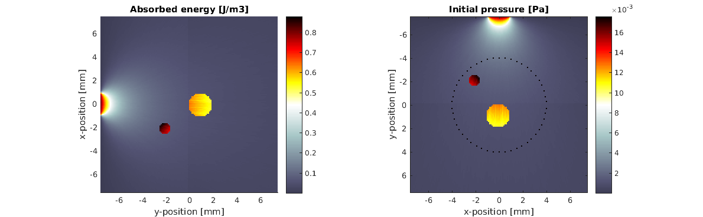
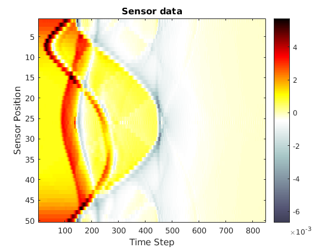

Simulating the photoacoustic effect using k-Wave: kwavetest.m
This example demonstrates simulation of a pressure field generated through the absorption of an externally introduced light pulse. The light propagation is simulated using ValoMC and the propagation and detection of pressure wavefield is simulated using k-Wave, see http://www.k-wave.org/documentation/k-wave_initial_value_problems.php. The example also shows how the computation grid of k-Wave and mesh of ValoMC can be made compatible. Note that k-Wave uses SI units (e.g. [m]) and ValoMC works in millimetre-scale (e.g. [mm]).
k-Wave is an open source acoustics toolbox for MATLAB and C++ developed by Bradley Treeby and Ben Cox (University College London) and Jiri Jaros (Brno University of Technology). The software is designed for time domain acoustic and ultrasound simulations in complex and tissue-realistic media.
k-Wave homepage: http://www.k-wave.org/. B. E. Treeby and B. T. Cox: "k-Wave: MATLAB toolbox for the simulation and reconstruction of photoacoustic wave-fields", Journal of Biomedical Optics, 15(2):021314, 2010.
Note: there was an incorrectly explained unit conversion earlier in this example. See the text shown in red.
Contents
- k-Wave initialisation
- Create a ValoMC mesh
- Define optical coefficients
- Create a light source
- Run the Monte Carlo simulation
- Compute the initial pressure from the photon fluence
- Define the k-Wave sensor mask
- Move the perfectly matched layer (PML) outside of the computation domain and run the acoustic simulation
- Plot the solution
k-Wave initialisation
The initialisation is done as normal in k-Wave. Care must be taken at the initialization ValoMC, to make a matching computational simulation area for (see ValoMC initialization) the photon propagation simulation.
clear all; % Create the k-Wave grid Nx = 150; % number of grid points in the x (row) direction Ny = 150; % number of grid points in the y (column) direction dx = 0.1e-3; % grid point spacing in the x direction [m] dy = 0.1e-3; % grid point spacing in the y direction [m] kgrid = makeGrid(Nx, dx, Ny, dy); % Create two internal structures using makeDisk discs = makeDisc(Nx, Ny, 55, 55, 5) + makeDisc(Nx, Ny, 75, 85, 10); % Define the acoustic properties disc_indices = find(discs==1); medium.sound_speed = 1500*ones(Nx, Ny); % [m/s] medium.sound_speed(disc_indices) = 1800; % [m/s] medium.density = 1000*ones(Nx, Ny); % [kg/m^3] medium.density(:,Ny/2:end) = 1400;
WARNING: makeGrid will be deprecated in a future version of k-Wave.
Update codes to use the syntax kgrid = kWaveGrid(...).
Create a ValoMC mesh
ValoMC uses triangles and tetrahedrons as the basis shape, whereas in k-Wave pixels and voxels are used. createGridMesh can be used to create a straightforward mapping between the triangles and pixels. Note that K-Wave uses matrices in the format matrix(X,Y), whereas MATLAB t(c.f. meshgrid) and ValoMC uses matrix(Y,X) Therefore x and y should be swapped when moving between ValoMC arrays and k-Wave arrays
vmcmesh = createGridMesh(kgrid.y_vec*1e3, kgrid.x_vec*1e3); % [m to mm]
Define optical coefficients
For users accustomed to k-Wave, the optical coefficients can be set in similar fashion as in k-Wave, i.e. using multidimensional arrays. If one of the arrays defining the medium is given as multidimensional array to ValoMC, the code will assume that the mesh was created using 'createGridMesh' and the output fluence will also given as a two dimensional array in solution.grid_fluence. See the example 'Working with pixel and voxel data' on how to achieve similar assignments using one dimensional indexing.
vmcmedium.scattering_coefficient = 0.01*ones(Nx, Ny); vmcmedium.absorption_coefficient = 0.001*ones(Nx, Ny); discs = makeDisc(Nx, Ny, 55, 55, 5) + makeDisc(Nx, Ny, 75, 85, 10); % Define the acoustic properties disc_indices = find(discs==1); vmcmedium.absorption_coefficient(disc_indices) = 0.01; vmcmedium.scattering_anisotropy = 0.9; % scattering anisotropy parameter [unitless] vmcmedium.refractive_index = 1.0*ones(Nx, Ny); vmcmedium.refractive_index(:,Ny/2:end) = 1.4; % refractive index [unitless] % Define the Gruneisen parameter describing photoacoustic efficiency vmcmedium.gruneisen_parameter = 0.02*ones(Nx, Ny); % [unitless]
Create a light source
% Set a light source with a width of 2 mm and cosinic directional profile % in -x direction boundary_with_lightsource = findBoundaries(vmcmesh, 'direction', ... [0 0], ... [-10 0], ... 2); vmcboundary.lightsource(boundary_with_lightsource) = {'cosinic'};
Run the Monte Carlo simulation
solution = ValoMC(vmcmesh, vmcmedium, vmcboundary);
ValoMC-2D -------------------------------------------- Version: v1.0b-118-g853f111 Revision: 131 OpenMP enabled Using 16 threads -------------------------------------------- Initializing MC2D... Computing... ...done Done
Compute the initial pressure from the photon fluence
Note that since the medium was defined as two dimensional arrays, the output is also given as a two-dimensional array.
Corrected explanation
% Compute the absorbed optical energy density. % multiply by % 1e6 to convert [J/mm^2] to [J/m^2] % 1e-3 to set the total energy in the pulse to 1 mJ % vmcmedium.absorbed_energy = vmcmedium.absorption_coefficient .* solution.grid_fluence*1e3; % [J/m3] % Compute the initial pressure distribution source.p0 = vmcmedium.gruneisen_parameter .* vmcmedium.absorbed_energy; % [Pa]
Define the k-Wave sensor mask
% Define a circular sensor sensor_radius = 4e-3; % [m] num_sensor_points = 50; % number of sensor points sensor.mask = makeCartCircle(sensor_radius, num_sensor_points);
Move the perfectly matched layer (PML) outside of the computation domain and run the acoustic simulation
The PML is a layer that absorbs waves for simulating free regions and is normally contained within the computation region of k-Wave. For a more straightforward mapping between the computation region of k-Wave and ValoMC, the PML is moved outside of the computation region.
sensor_data = kspaceFirstOrder2D(kgrid, medium, source, sensor, 'PMLInside', false);
Running k-Wave simulation...
start time: 11-Feb-2020 17:43:38
reference sound speed: 1800m/s
WARNING: visualisation plot scale may not be optimal for given source.
dt: 16.6667ns, t_end: 14.1333us, time steps: 849
input grid size: 150 by 150 grid points (15 by 15mm)
maximum supported frequency: 7.5MHz
smoothing p0 distribution...
expanding computational grid...
computational grid size: 190 by 190 grid points
WARNING: Highest prime factors in each dimension are 19 19
Use dimension sizes with lower prime factors to improve speed
calculating Delaunay triangulation...
precomputation completed in 0.6779s
starting time loop...
estimated simulation time 8.6441s...
simulation completed in 8.3875s
total computation time 9.1863s
Plot the solution
figure('rend','painters','pos',[10 10 1200 400]) % plot the initial pressure and sensor distribution subplot(1,2,1) hold on % We have to swap x and y again imagesc(kgrid.y_vec*1e3, kgrid.x_vec*1e3, vmcmedium.absorbed_energy, [min(vmcmedium.absorbed_energy(:)) ... max(vmcmedium.absorbed_energy(:))]); xlabel('y-position [mm]'); ylabel('x-position [mm]'); colormap default; c = colorbar; % create a colorbar axis image; title('Absorbed energy [J/m3]'); hold off subplot(1,2,2) imagesc(kgrid.x_vec*1e3, kgrid.y_vec*1e3, transpose(source.p0 + ... cart2grid(kgrid, sensor.mask)), [min(source.p0(:)) ... max(source.p0(:))]); colormap(getColorMap); xlabel('x-position [mm]'); ylabel('y-position [mm]'); c = colorbar; % create a colorbar axis image; title('Initial pressure [Pa]'); hold off % plot the simulated sensor data figure; imagesc(sensor_data, [min(sensor_data(:)) max(sensor_data(:))]); colormap(getColorMap); ylabel('Sensor Position'); xlabel('Time Step'); c = colorbar; % create a colorbar colorbar; title('Sensor data'); 